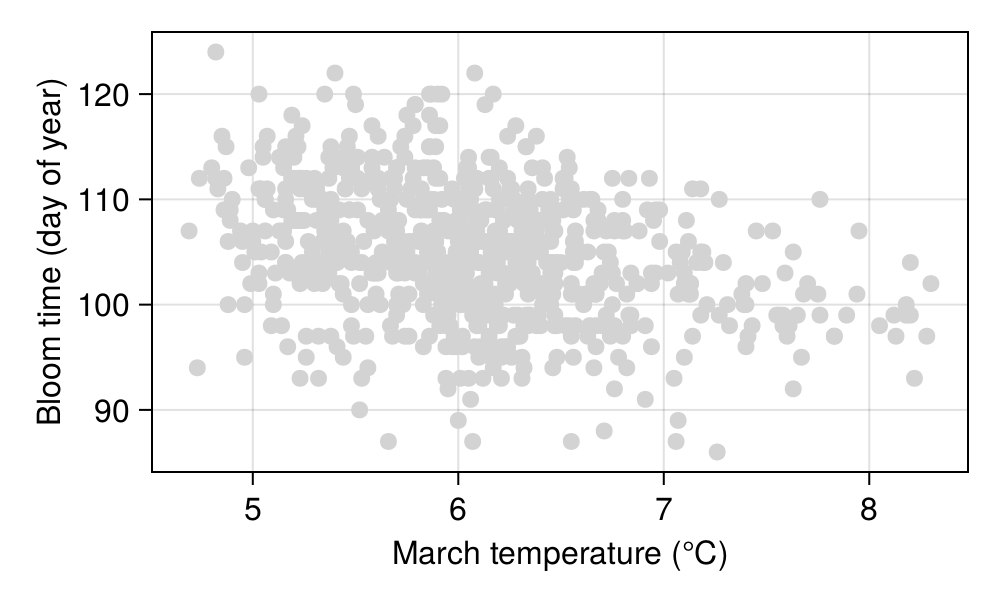
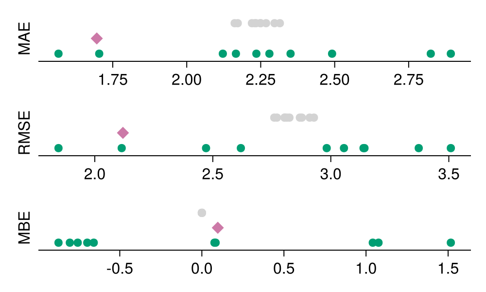
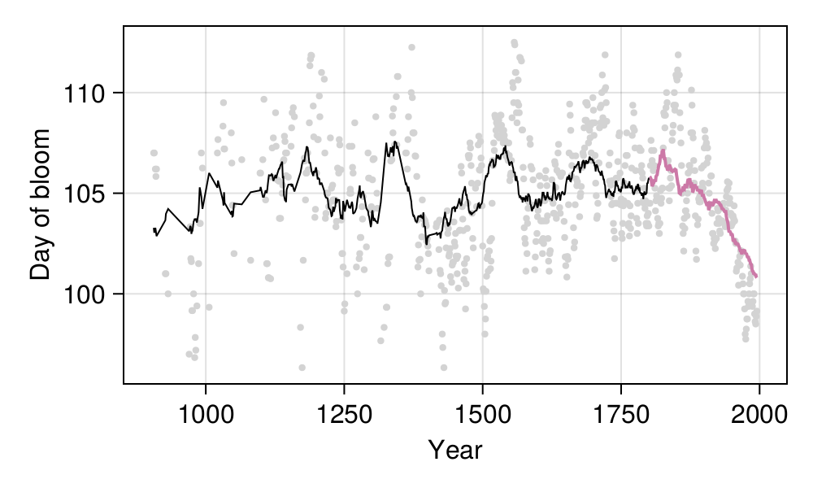
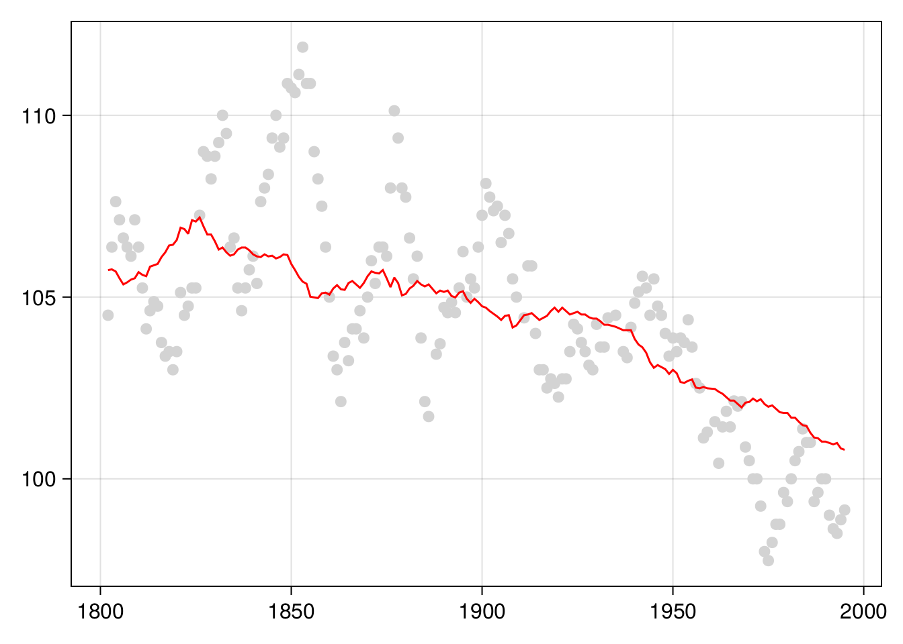

| Dataset | Measure | Loss (avg.) | Loss (std. dev.) |
|---|---|---|---|
| Testing | MAE | 1.696 | |
| Training | MAE | 2.2397 | 0.0482364 |
| Validation | MAE | 2.26331 | 0.421513 |
| Testing | MBE | 0.0971036 | |
| Training | MBE | 9.8278e-15 | 1.15597e-14 |
| Validation | MBE | 0.000419595 | 0.910229 |
| Testing | MSE | 4.49123 | |
| Training | MSE | 8.04855 | 0.32487 |
| Validation | MSE | 8.24897 | 2.93094 |
| Testing | RMSE | 2.11925 | |
| Training | RMSE | 2.83648 | 0.0570941 |
| Validation | RMSE | 2.82514 | 0.545232 |
4 Cross-validation
In Chapter 2, we were very lucky. Because we applied an unsupervised method, we didn’t really have a target to compare to the output. Whatever classification we got, we had to live with it. It was incredibly freeing. Sadly, in most applications, we will have to compare our predictions to data, and data are incredibly vexatious. In this chapter, we will develop intuitions on the notions of training, testing, and validation.
In a sense, we started thinking about these concepts in Chapter 3; specifically, we came up with a way to optimize the parameters of our model (i.e. of training our model) based on a series of empirical observations, and a criteria for what a “good fit” is. We further appraised the performance of our model by measuring the loss (our measure of how good the fit is) on a dataset that was not accessible during training, which we called the testing dataset. One issue with our approach in Chapter 3 was that we had to set aside one out of five observation for testing; in this chapter, we will explore more advanced techniques to perform cross-validation.
4.1 How can we split a dataset?
There is a much more important question to ask first: why do we split a dataset? In a sense, answering this question echoes the discussion we started in Section 3.4.4, because the purpose of splitting a dataset is to ensure we can train and evaluate it properly, in order to deliver the best possible model.
When a model is trained, it has learned from the data, we have tuned its hyper-parameters to ensure that it learned with the best possible conditions, and we have applied a measure of performance after the entire process is complete, to communicate how well we expect our model to work. These three tasks require three different datasets, and this is the purpose of splitting our data into groups.
One of the issues when reading about splitting data is that the terminology can be muddy. For example, what constitutes a testing and validation set can largely be a matter of perspective. In many instances, testing and validation are used interchangeably, especially when there is a single model involved. Nevertheless, it helps to settle on a few guidelines here, before going into the details of what each dataset constitutes and how to assemble it.
The training instances are examples that are given to the model during the training process. This dataset has the least ambiguous definition. The training data is defined by subtraction, in a sense, as whatever is left of the original data after we set aside testing and validation sets.
The testing instances are used at the end of the process, to measure the performance of a trained model with tuned hyper-parameters. If the training data are the lectures, testing data are the final exam: we can measure the performance of the model on this dataset and report it as the model performance we can expect when applying the model to new data. There is a very important, chapter-long, caveat about this last point, related to the potential of information leak between datasets, which is covered in Section 6.2.
The validation data are used in-between, as part of the training process. They are (possibly) a subset of the training data that we use internally to check the performance of the model, often in order to tune its hyper-parameters, or as a way to report on the over-fitting of the model during the training process.
The difference between testing and validation is largely a difference of intent. When we want to provide an a posteriori assessment of the model performance, the dataset we use to determine this performance is a testing dataset. When we want to optimize some aspect of the model, the data we use for this are the validation data. With this high-level perspective in mind, let’s look at each of these datasets in turn. The differences between these three datasets are summarized in Table 4.1.
| Dataset | Trains | Purpose | Data used for training |
|---|---|---|---|
| Training | yes | train model | |
| Validation | validate during training | training data only | |
| Testing | estimates of future performance | all except testing |
4.1.1 Training
In data science (in applied machine learning in particular), we do not fit models. We train them. This is an important difference: training is an iterative process, that we can repeat, optimize, and tweak. The outcome of training and the outcome of fitting are essentially the same (a model that is parameterized to work as well as possible on a given dataset), but it is good practice to adopt the language of a field, and the language of data science emphasizes the different practices in model training.
Training, to provide a general definition, is the action of modifying the parameters of a model, based on knowledge of the data, and the error that results from using the current parameter values. In Chapter 3, for example, we saw how to train a linear model using the technique of gradient descent, based on a specific dataset, with a learning rate and loss function we picked based on trial and error. Our focus in this chapter is not on the methods we use for training, but on the data that are required to train a model.
Training a model is a process akin to rote learning: we will present the same input, and the same expected responses, many times over, and we will find ways for the error on each response to decrease (this is usually achieved by minimizing the loss function).
In order to initiate this process, we need an untrained model. Untrained, in this context, refers to a model that has not been trained on the specific problem we are addressing; the model may have been trained on a different problem (for example, we want to predict the distribution of a species based on a GLM trained on a phylogenetically related species). It is important to note that by “training the model”, what we really mean is “change the structure of the parameters until the output looks right”. For example, assuming a simple linear model like \(c(X) = \beta_0 + \beta_1X_1 + \beta_2X_2\), training this model would lead to changes in the values of \(\beta\), but not to the consideration of a new model \(c(X) = \beta_0 + \beta_1X_1 + \beta_2X_2 + \beta_3X_1X_2\). Comparing models is (often) the point of validation, which we will address later on.
4.1.2 Validating
The easiest way to think about the validation dataset is by thinking about what it is not used for: training the model (this is the training set), and giving a final overview of the model expected performance (this is the testing set). The validation set is used for everything else (model selection, cross-validation, hyper-parameters tuning), albeit in a specific way. With the training set, we communicate the predictors and the labels to the model, and update the weights of the model in response. With the validation set, we communicate the predictors and the labels to the model, but we do not update the weights in response. All we care about during validation is the performance of the model on a problem it has not yet encountered during this specific round of training. If the training set is like attending a lecture, the validation set is formative feedback.
Of course, one issue with the creation of a validation set is that it needs to resemble the problem the model will have to solve in practice. We will discuss this more in depth in the following sections, but it is worth thinking about an example. Assume a model that classifies a picture as having either a black bear, or no black bear. Now, we can train this model using, for example, images from 10 camera traps that are situated in a forest. And we might want to validate with a camera trap that is in a zoo. In one of the enclosures. The one with a bear. A polar one.
The issue with this dataset as a validation dataset is that is does not matches the problem we try to solve in many different ways. First, we will have an excess of images with bears compared to our problem environment. Camera traps can have a large number of spurious activation, resulting in images without animals in them (Newey et al. 2015). Second, the data will come from very different environments (forest v. zoo). Finally, we are attempting to validate on something that is an entirely different species of bear. This sounds like an egregious case (it is), but it is easy to commit this type of mistake when our data get more complex than black bear, polar bear, no bear.
Validation is, in particular, very difficult when the dataset we use for training has extreme events (Bellocchi et al. 2010). Similarly, the efficiency of validation datasets can be limited if it reflects the same biases as the training data (Martinez-Meyer 2005). Recall that this validation dataset is used to decide on the ideal conditions to train the final model before testing (and eventually, deployment); it is, therefore, extremely important to get it right. A large number of techniques to split data (Søgaard et al. 2021; Goot 2021) use heuristics to minimize the risk of picking the wrong validation data.
4.1.3 Testing
The testing dataset is special. The model has never touched it. Not during training, and not for validation. For this reason, we can give it a very unique status: it is an analogue to data that are newly collected, and ready to be passed through the trained model in order to make a prediction.
The only difference between the testing set and actual new data is that, for the testing set, we know the labels. In other words, we can compare the model output to these labels, and this gives us an estimate of the model performance on future data. Assuming that this data selection was representative of the real data we will use for our model once it is trained, the performance on the validation set should be a good baseline for what to expect in production.
But this requires a trained model, and we sort of glossed over this step.
In order to come up with a trained model, it would be a strange idea not to use the validation data – they are, after all, holding information about the data we want to model! Once we have evaluated our model on the validation set, we can start the last round of training to produce the final model. We do this by training the model using everything except the testing data. This is an appropriate thing to do: because we have evaluated the model on the validation data, and assuming that it has a correct performance, we can expect that retraining the model on the validation data will not change the performance of the model.
4.2 The problem: cherry blossom phenology
The cherry blossom tree (Prunus) is renowned for its impressive bloom, which happens from March to April. The blooming, and associated festivals, are of particular cultural significance (Moriuchi and Basil 2019), and is therefore a cultural ecosystem service (Kosanic and Petzold 2020). Climate change has a demonstrable effect on the date of first bloom on Prunus species in Japan (Primack, Higuchi, and Miller-Rushing 2009), which can affect the sustainability of cherry blossom festivals in the short term (Sakurai et al. 2011).
Long-term time series of the date of first bloom in Japan reveal that in the last decades, cherry blossom blooms earlier, which has been linked to, possibly, climate change and urbanization. Prunus species respond to environmental cues at the local level for their flowering (Mimet et al. 2009; Ohashi et al. 2011). The suspected causal mechanism is as follows: both global warming and urbanization lead to higher temperatures, which means a faster accumulation of degree days over the growing season, leading to an earlier bloom (Shi et al. 2017). Indeed, the raw data presented in Figure 4.1 show that trees bloom early when the temperatures are higher; the data for phenology have been collected by Aono and Kazui (2008), and the temperature reconstructions are from Aono and Saito (2009).

With these data in hand (day of year with the first bloom, and smoothed reconstructed temperature in March), we can start thinking about this hypothesis. But by contrast with our simple strategy in Chapter 3, this time, we will split our dataset into training, validation, and testing sets, as we discussed in the previous section. Yet there are many ways to split a dataset, and therefore before starting the analysis, we will have a look at a few of them.
4.3 Strategies to split data
Before seeing examples of strategies for cross-validation, it is important to consider the high-level perspective of the way we will perform the entire training sequence. First, we need to keep a testing dataset. Depending on the problem, it may be feasible or desirable to use an external testing dataset (Homeyer et al. 2022). In problems for which the volume of data is limited (the 99.99% of biodiversity applications that do not involve metagenomics of remote sensing), this is almost impossible, and therefore we need to resort to removing a proportion of the data. It means that collected data will never be used for training, which is not ideal, but what we gain in return is a fairer appraisal of the performance of the model, which is a really advantageous trade-off. When the testing data are removed, we can start splitting the rest of the data in testing and validation sets. This can involve two broad categories of families: exhaustive splits (all data are used for training and evaluation), and non-exhaustive splits (the opposite; for once, the terminology makes sense!).
4.3.1 Holdout
The holdout method is what we used in Chapter 3, in which we randomly selected some observations to be part of the validation data (which was, in practice, a testing dataset in this example), and kept the rest to serve as the training data. Holdout cross-validation is possibly the simplest technique, but it suffers from a few drawbacks.
The model is only trained for one split of the data, and similarly only evaluated for one split of the data. There is, therefore, a chance to sample a particularly bad combination of the data that lead to erroneous results. Attempts to quantify the importance of the predictors are likely to give particularly unstable results, as the noise introduced by picking a single random subset will not be smoothed out by multiple attempts.
In addition, as Hawkins, Basak, and Mills (2003) point out, holdout validation is particularly wasteful in data-limited settings, where there are fewer than hundreds of observations. The reason is that the holdout dataset will never contribute to training, and assuming the data are split 80/20, one out of five observations will not contribute to the model. Other cross-validation schemes presented in this section will allow observations to be used both for training and validation.
4.3.2 Leave-p-out
In leave-p-out cross-validation (LpOCV), starting from a dataset on \(n\) observations, we pick \(p\) at random to serve as validation data, and \(n-p\) to serve as the training dataset. This process is then repeated exhaustively, which is to say we split the dataset in every possible way that gives \(p\) and \(n-p\) observations, for a set value of \(p\). The model is then trained on the \(n-p\) observations, and validated on the \(p\) observations for validation, and the performance (or loss) is averaged to give the model performance before testing.
Celisse (2014) points out that \(p\) has to be large enough (relative to the sample size \(n\)) to overcome the propensity of the model to overfit on a small training dataset. One issue with LpOCV is that the number of combinations is potentially very large. It is, in fact, given by the binomial coefficient \(\binom{n}{p}\), which gets unreasonably large even for small datasets. For example, running LpOCV on \(n=150\) observations, leaving out \(p=10\) for validation every time, would require to train the model about \(10^{15}\) times. Assuming we can train the model in \(10^{-3}\) seconds, the entire process would require 370 centuries.
Oh well.
4.3.3 Leave-one-out
The leave-one-out cross-validation (LOOCV) is a special case of LpOCV with \(p=1\). Note that it is a lot faster to run than LpOCV, because \(\binom{n}{1}=n\), and so the validation step runs in \(\mathcal{O}(n)\) (LpOCV runs in \(\mathcal{O}(n!)\)). LOOCV is also an exhaustive cross-validation technique, as every possible way to split the dataset will be used for training and evaluation.
4.3.4 k-fold
One of the most frequent cross-validation scheme is k-fold cross-validation. Under this approach, the dataset is split into \(k\) equal parts (and so when \(k = n\), this is also equivalent to LOOCV). Like with LOOCV, one desirable property of k-fold cross-validation is that each observation is used exactly one time to evaluate the model , and exactly \(k-1\) times to train it.
But by contrast with the holdout validation approach, all observations are used to train the model.
When the data have some specific structure, it can be a good thing to manipulate the splits in order to maintain this structure. For example, Bergmeir and Benítez (2012) use temporal blocks for validation of time series, and retain the last part of the series for testing (we illustrate this in Figure 4.2). For spatial data, Hijmans (2012) suggests the use of a null model based on distance to training sites to decide on how to split the data; Valavi et al. (2018) have designed specific k-fold cross-validation schemes for species distribution models. These approaches all belong to the family of stratified k-fold cross-validation (Zeng and Martinez 2000).

The appropriate value of \(k\) is often an unknown. It is common to use \(k = 10\) as a starting point (tenfold cross-validation), but other values are justifiable based on data volume, or complexity of the model training, to name a few.
4.3.5 Monte-Carlo
One limitation of k-fold cross-validation is that the number of splits is limited by the amount of observations, especially if we want to ensure that there are enough samples in the validation data. To compensate for this, Monte-Carlo cross-validation is essentially the application (and averaging) of holdout validation an arbitrary number of times. Furthermore, the training and validation datasets can be constructed in order to account for specific constraints in the dataset, giving more flexibility than k-fold cross-validation (Roberts et al. 2017). When the (computational) cost of training the model is high, and the dataset has specific structural constraints, Monte-Carlo cross-validation is a good way to generate data for hyperparameters tuning.
One issue with Monte-Carlo cross-validation is that we lose the guarantee that every observation will be used for training at least once (and similarly for validation). Trivially, this becomes less of an issue when we increase the number of replications, but then this suffers from the same issues as LpOCV, namely the unreasonable computational requirements.
4.4 Application: when do cherry blossom bloom?
The model we will train for this section is really simple: \(\text{bloom day} = m \times \text{temperature} + b\). This is a linear model, and one with a nice, direct biological interpretation: the average (baseline) day of bloom is \(b\), and each degree of temperature expected in March adds \(m\) days to the bloom date. At this point, we might start thinking about the distribution of the response, and what type of GLM we should used, but no. Not today. Today, we want to iterate quickly, and so we will start with a model that is exactly as simple as it needs to be: this is, in our case, linear regression.
At this point, we may be tempted to think a little more deeply about the variables and the structure of the model, to express the bloom day as a departure from the expected value, and similarly with the temperature, using for example the z-score. This is a transformation we will apply starting from Chapter 5, but in order to apply it properly, we need to consider some elements that will be introduced in Section 6.2. For this reason, we will not apply any transformation to the data yet; feel free to revisit this exercise after reading through Section 6.2.
This approach (start from a model that is suspiciously simple) is a good thing, for more than a few reasons. First, it gives us a baseline to compare more complicated models against. Second, it means that we do not need to focus on the complexity of the code (and the model) when building a pipeline for the analysis. Finally, and most importantly, it gives us a result very rapidly, which enables a loop of iterative model refinement on a very short timescale. Additionally, at least for this example, the simple models often work well enough to support a discussion of the model and training process.
4.4.1 Performance evaluation
We can visualize the results of our model training and assessment process. These results are presented in Figure 4.3 (as well as in Table 4.2, if you want to see the standard deviation across all splits), and follow the same color-coding convention we have used so far. All three loss measures presented here express their loss in the units of the response variable, which in this case is the day of the year where the bloom was recorded. These results show that our trained model achieves a loss of the order of a day or two in the testing data, which sounds really good!

Yet it is important to contextualize these results. What does it means for our prediction to be correct plus or minus two days? There are at least two important points to consider.
First, what are we predicting? Our response variable is not really the day of the bloom, but is rather a smoothed average looking back some years, and looking ahead some years too. For this reason, we are removing a lot of the variability in the underlying time series. This is not necessarily a bad thing, especially if we are looking for a trend at a large temporal scale, but it means that we should not interpret our results at a scale lower than the duration of the window we use for averaging.
Second, what difference does a day make? Figure 4.1 shows that most of the days of bloom happen between day-of-year 100 and day-of-year 110. Recall that the MAE is measured by taking the average absolute error – a mistake of 24 hours is 10% of this interval! This is an example of how thinking about the units of the loss function we use for model evaluation can help us contextualize the predictions, and in particular how actionable they can be.
4.4.2 Model predictions
The predictions of our model are presented in Figure 4.4; these are the predictions of the final model, that is, the model that we trained on everything except the testing data, and for which we can get the performance by looking at Figure 4.3.

The question we now need to answer is: is our model doing a good job? We can start thinking about this question in a very qualitative way: yes, it does a goob job at drawing a line that, through time, goes right through the original data more often that it doesn’t. As far as validation goes, it maybe underestimates the drop in the response variable (it predicts the bloom a little later), but maybe there are long-term effects, expressed over the lifetime of the tree (the first bloom usually takes places after 6 or 7 growth seasons), that we do not account for.
Think about the structure of linear models. Can we use information about the previous years in our model? Would there be a risk associated to adding more parameters?
Our model tends to smooth out some of the variation; it does not predict bloom dates before day of year 100, or after day of year 108, although they do happen. This may not be a trivial under-prediction: some of these cycles leading to very early/late bloom can take place over a century, meaning that our model could be consistently wrong (which is to say, wrong with the same bias) for dozens of years in a row.
4.4.3 Is our model good, then?
The answer is, it depends. Models are neither good, nor bad. They are either fit, or unfit, for a specific purpose.
If the purpose is to decide when to schedule a one-day trip to see the cherry blossom bloom, our model is not really fit – looking at the predictions, it gets within a day of the date of bloom (but oh, by the way, this is an average over almost a decade!) about 15% of the time, which jumps up to almost 30% if you accept a two-days window of error.
If the purpose is to look at long-time trends in the date of bloom, then our model actually works rather well. It does under-estimate the amplitude of the cycles, but not by a large amount. In fact, we could probably stretch the predictions a little, applying a little correction factor, and have a far more interesting model.
We will often be confronted to this question when working with prediction. There is not really a criteria for “good”, only a series of compromises and judgment calls about “good enough”. This is important. It reinforces the imperative of keeping the practice of data science connected to the domain knowledge, as ultimately, a domain expert will have to settle on whether to use a model or not.

4.5 Conclusion
In this chapter, we trained a linear regression model to predict the day of bloom of cherry blossom trees based on the predicted temperature in March. Although the model makes a reasonable error (of the order of a few days), a deeper investigation of the amplitude of this error compared to the amplitude of the response variable, and of the comparison of extreme values in the prediction and in the data, led us to a more cautious view about the usefulness of this model. In practice, if we really wanted to solve this problem, this is the point where we would either add variables, or try another regression algorithm, or both.
References
Aono, Yasuyuki, and Keiko Kazui. 2008. “Phenological Data Series of Cherry Tree Flowering in Kyoto, Japan, and Its Application to Reconstruction of Springtime Temperatures Since the 9th Century.” International Journal of Climatology 28 (7): 905–14. https://doi.org/10.1002/joc.1594.
Aono, Yasuyuki, and Shizuka Saito. 2009. “Clarifying Springtime Temperature Reconstructions of the Medieval Period by Gap-Filling the Cherry Blossom Phenological Data Series at Kyoto, Japan.” International Journal of Biometeorology 54 (2): 211–19. https://doi.org/10.1007/s00484-009-0272-x.
Bellocchi, Gianni, Mike Rivington, Marcello Donatelli, and Keith Matthews. 2010. “Validation of Biophysical Models: Issues and Methodologies. A Review.” Agronomy for Sustainable Development 30 (1): 109–30. https://doi.org/10.1051/agro/2009001.
Bergmeir, Christoph, and José M. Benítez. 2012. “On the Use of Cross-Validation for Time Series Predictor Evaluation.” Information Sciences 191 (May): 192–213. https://doi.org/10.1016/j.ins.2011.12.028.
Celisse, Alain. 2014. “Optimal Cross-Validation in Density Estimation with the $l^2$-Loss.” The Annals of Statistics 42 (5). https://doi.org/10.1214/14-aos1240.
Goot, Rob van der. 2021. “We Need to Talk about Train-Dev-Test Splits.” Proceedings of the 2021 Conference on Empirical Methods in Natural Language Processing. https://doi.org/10.18653/v1/2021.emnlp-main.368.
Hawkins, Douglas M., Subhash C. Basak, and Denise Mills. 2003. “Assessing Model Fit by Cross-Validation.” Journal of Chemical Information and Computer Sciences 43 (2): 579–86. https://doi.org/10.1021/ci025626i.
Hijmans, Robert J. 2012. “Cross-Validation of Species Distribution Models: Removing Spatial Sorting Bias and Calibration with a Null Model.” Ecology 93 (3): 679–88. https://doi.org/10.1890/11-0826.1.
Homeyer, André, Christian Geißler, Lars Ole Schwen, Falk Zakrzewski, Theodore Evans, Klaus Strohmenger, Max Westphal, et al. 2022. “Recommendations on Compiling Test Datasets for Evaluating Artificial Intelligence Solutions in Pathology.” Modern Pathology 35 (12): 1759–69. https://doi.org/10.1038/s41379-022-01147-y.
Kosanic, Aleksandra, and Jan Petzold. 2020. “A Systematic Review of Cultural Ecosystem Services and Human Wellbeing.” Ecosystem Services 45 (October): 101168. https://doi.org/10.1016/j.ecoser.2020.101168.
Martinez-Meyer, Enrique. 2005. “Climate Change and Biodiversity: Some Considerations in Forecasting Shifts in Species’ Potential Distributions.” Biodiversity Informatics 2 (0). https://doi.org/10.17161/bi.v2i0.8.
Mimet, A., V. Pellissier, H. Quénol, R. Aguejdad, V. Dubreuil, and F. Rozé. 2009. “Urbanisation Induces Early Flowering: Evidence from Platanus Acerifolia and Prunus Cerasus.” International Journal of Biometeorology 53 (3): 287–98. https://doi.org/10.1007/s00484-009-0214-7.
Moriuchi, Emi, and Michael Basil. 2019. “The Sustainability of Ohanami Cherry Blossom Festivals as a Cultural Icon.” Sustainability 11 (6): 1820. https://doi.org/10.3390/su11061820.
Newey, Scott, Paul Davidson, Sajid Nazir, Gorry Fairhurst, Fabio Verdicchio, R. Justin Irvine, and René van der Wal. 2015. “Limitations of Recreational Camera Traps for Wildlife Management and Conservation Research: A Practitioner’s Perspective.” Ambio 44 (S4): 624–35. https://doi.org/10.1007/s13280-015-0713-1.
Ohashi, Yukitaka, Hiroshi Kawakami, Yoshinori Shigeta, Hiroshi Ikeda, and Nobuko Yamamoto. 2011. “The Phenology of Cherry Blossom (Prunus Yedoensis “Somei-Yoshino”) and the Geographic Features Contributing to Its Flowering.” International Journal of Biometeorology 56 (5): 903–14. https://doi.org/10.1007/s00484-011-0496-4.
Primack, Richard B., Hiroyoshi Higuchi, and Abraham J. Miller-Rushing. 2009. “The Impact of Climate Change on Cherry Trees and Other Species in Japan.” Biological Conservation 142 (9): 1943–49. https://doi.org/10.1016/j.biocon.2009.03.016.
Roberts, David R., Volker Bahn, Simone Ciuti, Mark S. Boyce, Jane Elith, Gurutzeta Guillera-Arroita, Severin Hauenstein, et al. 2017. “Cross-Validation Strategies for Data with Temporal, Spatial, Hierarchical, or Phylogenetic Structure.” Ecography 40 (8): 913–29. https://doi.org/10.1111/ecog.02881.
Sakurai, Ryo, Susan K. Jacobson, Hiromi Kobori, Richard Primack, Kohei Oka, Naoya Komatsu, and Ryo Machida. 2011. “Culture and Climate Change: Japanese Cherry Blossom Festivals and Stakeholders’ Knowledge and Attitudes about Global Climate Change.” Biological Conservation 144 (1): 654–58. https://doi.org/10.1016/j.biocon.2010.09.028.
Shi, Peijian, Zhenghong Chen, Gadi V. P. Reddy, Cang Hui, Jianguo Huang, and Mei Xiao. 2017. “Timing of Cherry Tree Blooming: Contrasting Effects of Rising Winter Low Temperatures and Early Spring Temperatures.” Agricultural and Forest Meteorology 240-241 (June): 78–89. https://doi.org/10.1016/j.agrformet.2017.04.001.
Søgaard, Anders, Sebastian Ebert, Jasmijn Bastings, and Katja Filippova. 2021. “We Need to Talk about Random Splits.” Proceedings of the 16th Conference of the European Chapter of the Association for Computational Linguistics: Main Volume. https://doi.org/10.18653/v1/2021.eacl-main.156.
Valavi, Roozbeh, Jane Elith, José J. Lahoz-Monfort, and Gurutzeta Guillera-Arroita. 2018. “Block CV : An r Package for Generating Spatially or Environmentally Separated Folds for k -Fold Cross-Validation of Species Distribution Models.” Edited by David Warton. Methods in Ecology and Evolution 10 (2): 225–32. https://doi.org/10.1111/2041-210x.13107.
Zeng, Xinchuan, and Tony R. Martinez. 2000. “Distribution-Balanced Stratified Cross-Validation for Accuracy Estimation.” Journal of Experimental & Theoretical Artificial Intelligence 12 (1): 1–12. https://doi.org/10.1080/095281300146272.